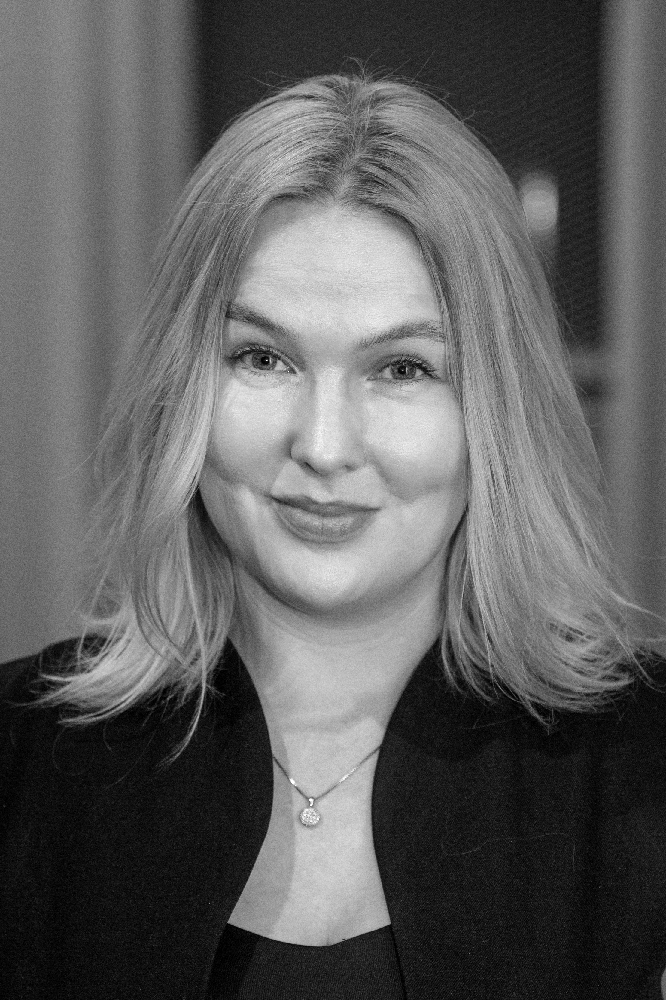
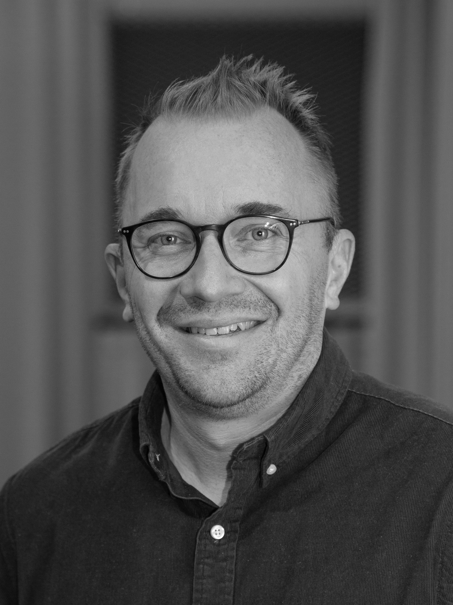
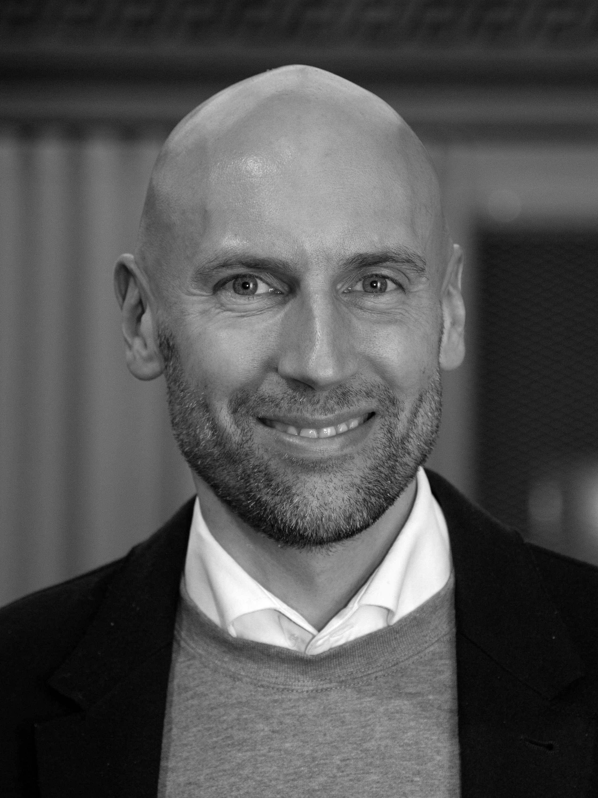
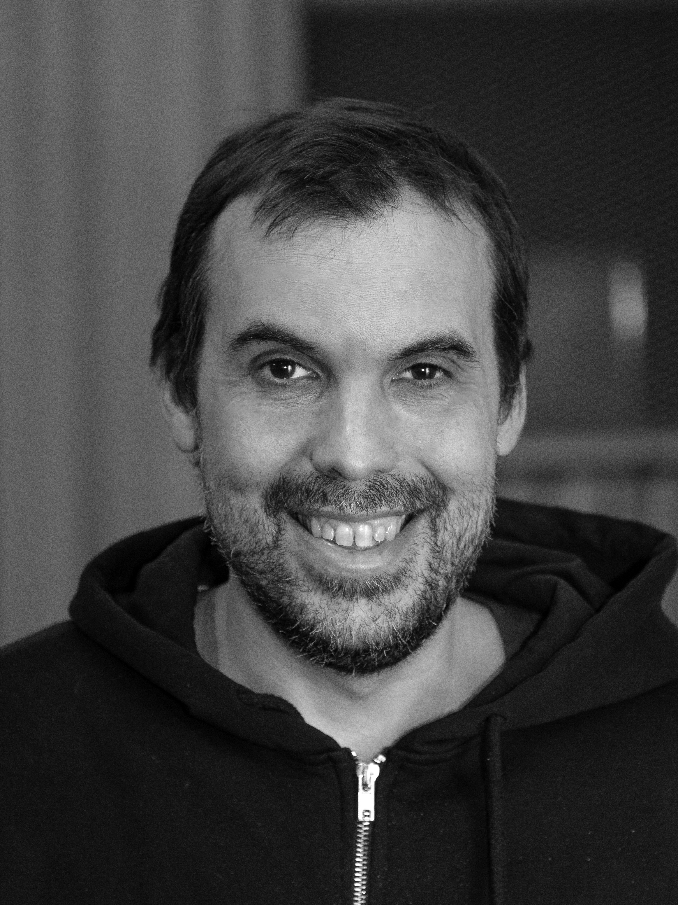

ITapaus
Yleiskatsaus
Askel Ventures pähkinänkuoressa.
Yhtiö
Askel Ventures Oy, ikuisuusholding (evergreen HoldCo)
Strategia
Mikro-pääomasijoittaminen. Ostamme, operoimme, kasvatamme ja irtaudumme valikoivasti. Rakennamme 20–25 yrityksen salkkua seuraavan 7 vuoden aikana.
Toimialat
Siivous, pesulapalvelut, jätehuolto, kiinteistöhuolto, teollisuuden aliurakointi. Välttämättömät sinisen kauluksen toimialat.
Maantiede
Suomi (ensisijainen) · Ruotsi & Viro (toissijainen)
Kohdeprofiili
Liikevaihto 500 000–3,5 milj. € · käyttökate vähintään 100 000+ €, 20 % marginaali · kauppahinta ≤1 milj. € · 100 % omistus
Alusta
Steve — oma tekoälypohjainen kohdehakujärjestelmä, käytössä ja hakee kohteita jo nyt. Yli 70 välittäjän verkosto.
Kilpailuetu
Dokumentoitu toimintamalli + tekoälyavusteinen kohdehaku — passiiviset pääomasijoittajat eivät kilpaile tällä kentällä. Kyky rakentaa räätälöityjä ohjelmistoja nopeasti. Kokeneet perustajat.
Rahoituskierros
Haemme enintään 1 milj. €, kantaosakkeita ylimmän tason holding-yhtiössä, minimimerkintä 100 000 €
Likviditeetti
Kasvava osinkovirta vuodesta 3 alkaen
Missio
Ostamme tylsiä yrityksiä. Rakennamme 20–25 yrityksen kasvavaa salkkua seuraavan 7 vuoden aikana.

ITapaus
Kolme miksi
Miksi olemme olemassa. Miksi juuri nyt.
Miksi sinun kannattaa sijoittaa.
Miksi olemme olemassa
Suomessa on yli 20 000 kannattavaa pienyritystä, joiden omistaja on jäämässä eläkkeelle — eikä näille yrityksille ole olemassa niiden kokoluokkaan rakennettua ostajaa. Me olemme se ostaja.
Miksi keräämme pääomaa juuri nyt
Sukupolvenvaihdosaalto huipentuu tällä vuosikymmenellä, kauppahintakertoimet ovat vielä järkeviä, tekoäly on tehnyt räätälöidyn ohjelmistokehityksen käytännössä ilmaiseksi — tämä on suurin yksittäinen vipuvartemme — ja ensimmäinen kauppa on jo todistanut mallin toimivan. Keräämme pääomaa rahoittaaksemme seuraavat 5 yritysostoa — nopeuttaaksemme salkun kasvua, ennen kuin ala ruuhkautuu.
Miksi sinun kannattaa sijoittaa
Olemme rakentaneet kohdehakukoneen, seulonta- ja due diligence -kehikon, markkinointi- ja myyntijärjestelmät sekä käynnissä olevan, kassavirtaa tuottavan referenssitapauksen — et ole sijoittamassa hypoteesiin, vaan jo toimivaan järjestelmään.

IIMoottori
Mikä on tylsä yritys
Teesimme, kuudessa piirteessä.
01Aito, todistettu kassavirta
Yli 10 vuotta vanha, oikeat asiakkaat, kannattava ja yli 20 % marginaali — ei tarinaa, vaan näyttöä.
02Välttämätön, ei valinnainen
Asiakkaat eivät voi jättää väliin edes laskusuhdanteessa — siivous, jätehuolto, pesulapalvelut, kiinteistöhuolto.
03Toistuvaa, ei kertaluontoista
Sopimuksia ja toistuvia asiakassuhteita, ei projektikohtaista liikevaihtoa.
04Sisäänrakennettu epäsymmetrinen potentiaali
Vanhoja, digitalisoimattomia toimialoja, joissa oikea ohjelmisto voi vapauttaa poikkeuksellisen tuoton — potentiaalia, jota ei ole hinnoiteltu kauppaan eikä tarvita sen kannattamiseksi.
05Alijohdettu, ei rikki
Kannattava jo nyt, mutta pyörii paperilla ja Exceleillä — ei järjestelmillä. Etsimme asiakasrekistereitä, joissa on yli 500 kontaktia, joita markkinointi ei ole koskaan koskettanut.
06Valmis sukupolvenvaihdokseen
Omistaja on valmis luopumaan — selkeä rakenteellinen tilaisuus, ei hauraus.

ITapaus
Mahdollisuus
Tämä ei ole yksi kauppa.
Tämä on rakenteellinen aalto.
73 000+
yli 54-vuotiasta suomalaista yrittäjää
34 000
aikoo myydä ulkopuoliselle ostajalle vuosikymmenen sisällä
20 000+
elinkelpoista yritystä lakkautusriskissä — sopivaa ostajaa ei ole
Ei yhden maan ongelma. Suomi, Ruotsi ja Viro kohtaavat kaikki saman väestörakenteen muurin — mahdollisuus ei katoa, vaikka yksi markkina kiristyisi.
Ei yhden toimialan ongelma. Siivous, pesulapalvelut, jätehuolto, kiinteistöhuolto, käsityöammatit — välttämättömiä palveluita läpi kokonaisen talouden segmentin, ei yksi onnenkantamoinen löytö.
Oikeita yrityksiä, oikeaa kassavirtaa. Nämä ovat vuosikymmenien ikäisiä, kannattavia, kassavirtaa tuottavia toimintoja — ei käännekohdeyrityksiä, ei ahdinkoa. Ainoa syy, miksi ne ovat saatavilla, on eläkkeelle valmis omistaja.

IIMoottori
Find01 / 03
Miten löydämme kohteet
ennen kuin ne tulevat markkinoille.
20+
aktiivista välittäjää
400
kohdetta putkessa
31 kohdan
seulontaprosessi
<100 päivää
ensimmäiseen kauppaan
Haku
Viikoittain
→
Seulonta
Aktiivinen
→
Sijoitus-komitea
Valikoiva
→
Due diligence
Tarkka
→
Ostettu
✓
Steve — tekoälypohjainen hakuagentti. Skannaa markkinapaikkojen ilmoitukset ja löytää heikkoja signaaleja — eläkeikää lähestyviä omistajia, jotka nousevat esiin sosiaalisesta mediasta ja julkisista uutisista — pisteytettynä teesin mukaan.
Välittäjäverkosto. Yli 20 aktiivista välittäjää työskentelee kanssamme, pääsy markkinoiden ulkopuolisiin kauppoihin ja 400 kohteen elävä putki.
Tarkka prosessi. 31 kohdan seulonta, sijoituskomitean päätösprosessi jossa 3/4 on oltava samaa mieltä, ja toistettava due diligence -malli jokaiselle kaupalle.

IIMoottori
Miksi tämä koskee sinua
Aitoa kassavirtaa. Aitoa omistajuutta.
Suoja alaspäin. Sijoitat kannattaviin, kassavirtaa tuottaviin yrityksiin ensimmäisestä päivästä lähtien — et ennen-liikevaihtoa-vetoon.
Epäsymmetrinen potentiaali. Digitalisaatio ja tekoäly avaavat kerroinlaajenemisen, jota kukaan muu tässä kokoluokassa ei tavoittele.
Yhteinen etu. Sama osakesarja kuin perustajilla. Ei etuoikeusrakenteita, ei pelejä.
Likviditeettipolku kasvavalla aikajanalla. Osinkoja vuodesta 3 alkaen, irtautumismahdollisuus 5–10-kertaisella arvostuksella salkun kypsyessä — tämä on kärsivällistä pääomaa, ei nopea käänne.

IIMoottori
Fund02 / 03
Miten rahoitamme hankkeemme.
Instrumentti
Keräämme enintään 1 milj. € omaa pääomaa — kantaosakkeita suunnatulla annilla. Sama osakesarja kuin perustajilla — ei etuoikeusrakenteita.
Varojen käyttö
Seuraavat 5 yritysostoa kasvavan skaalan saavuttamiseksi — jokainen rahoitetaan pankkivipuvaikutuksella (50–70 % kauppahinnasta) oman pääoman ohella, joten 1 milj. € pääomaa mahdollistaa moninkertaisen kauppa-arvon.
Taloudellinen tavoite
Kasvattaa portfolioyhtiöitä 10 %/vuosi. Valikoiva irtautuminen 6–8x käyttökatteella.
Minimimerkintä
100 000 €. Kierros suljetaan vaiheittain.
Irtautumisstrategia
Kasvata & myy jokainen portfolioyhtiö 5–10-kertaisella hankinta-arvolla, tai pidä pitkän aikavälin osinkotuottoa varten. Tai koko salkun kertairtautuminen.
Osinkoaikataulu
Ennustettavia osinkoja vuodesta 3 alkaen, jaettuna omistusosuuksien mukaisesti.
Näyttö
Ensimmäiset kaksi yritysostoa — Melers ja Auran Pesupojat — perustajat rahoittivat henkilökohtaisesti. Tämä kierros on skaalautumista sen ohitse.
Rahoituskumppanit


IIMoottori
Grow03 / 03
Askelin toimintamalli. Miten tylsästä
tulee poikkeuksellista.
Rekrytointi
Meidän tehtävämme: palkata ja valtuuttaa oikeat operaattorit — toimitusjohtajat ja esihenkilöt. Kannustamme heitä pyörittämään ja kasvattamaan liiketoimintaa päivittäin ilman perustajan tai Askelin osallistumista.
Markkinointi & myynti
Meidän tehtävämme on luoda: vakioidut toimintamallit liidien hankintaan, kontaktointiin ja konvertointiin — järjestelmät, jotka muuttavat kertaluontoisen ponnistuksen toistettavaksi kasvuksi.
Ohjelmistot & tekoäly
Kehitämme räätälöityjä toiminnanohjaus- ja asiakkuudenhallintajärjestelmiä sekä tekoälyagentteja jokaiselle yritykselle. Tässä rakennetaan epäsymmetrinen potentiaali.
Nämä toimet siirtävät yrityksen omistajavetoisesta ammattimaisesti johdetuksi — poistaen rakenteelliset pullonkaulat, jotka rajoittivat liikevaihdon kasvua, ja nostaen yrityksen irtautumisarvoa.
IIMoottori
Askel-efekti
Miten tylsästä tulee poikkeuksellista.
Käyttökatteen kasvu
250 t€ → 1,5 M€
Kerroinlaajeneminen
3–4x → 6–8x
Mekanismi
Vähennä toiminnan riskiä. Kasvata liiketoimintaa. Markkina hinnoittelee molemmat uudelleen.
Havainnollistavia lukuja. Todelliset kertoimet vaihtelevat yrityksen, toimialan ja toteutuksen mukaan.

IIMoottori
Referenssitapaus
Toimivuuden todiste: Melers Oy.
Kaupan kuvaus
Teollisuuspesula vanhustenhoidolle ja hotelleille sekä kuluttajien kemiallinen pesu, Turun seutu — toiminut vuodesta 1967 (perustettu 2001). 100 % osto, saatiin päätökseen tammikuussa 2026, alle 100 päivässä.
Liiketoiminnan tunnusluvut
Liikevaihto ~490 t€, käyttökate 115 t€ (23 % marginaali). 400 asiakasta, 60/40 B2B/B2C-jakauma. Ostettu ~3,5x käyttökatteella.
Rahoitus
400 t€ kauppahinta — 55 % pankkilaina (OP, Finnvera-taattu), 25 % myyjän rahoitus, 20 % perustajien oma pääoma (käteinen). Ei ulkopuolista pääomaa tarvittu.
Arvonluontisuunnitelma
Uusi moderni brändi, tekoälyavusteinen toiminnanohjausjärjestelmä, standardoidut myynti- ja markkinointikäytännöt, uusi ulospäin suuntautuva myyntijärjestelmä, kasvuhenkinen operaattori. Tavoite: vähintään +10 % vuosikasvu käyttökatteessa.
Rahoittajina

IIIPyyntö
Visio
Kasvua kohti 50 M€+.
Yksi yritysosto on todiste.
Salkku on liiketoiminta.
Salkku on liiketoiminta.
Askel Ventures, LLC
Teollisuuspesula
Melers Oy
Auran Pesupojat Oy
Yritys 3 Oy
Yritys 4 Oy
Toimiala 2
Yritys Oy
Yritys Oy
Yritys Oy
Toimiala 3 (Ruotsi)
Yritys AB
Yritys AB
Yritys AB
Toimiala 4
Yritys Ltd
Yritys Ltd
Yritys Ltd
Ei teesi — vaan jo käynnissä oleva kehityskulku: yritysosto #1 (Melers) tuottaa kassavirtaa ja #2 (Auran Pesupojat) on päätöksenteon vaiheessa. Kypsien yhtiöiden valikoivat irtautumiset huippukertoimilla rahoittavat seuraavan aallon.
IIIPyyntö
Tiimi
Miksi juuri tämä tiimi
rakentaa tylsien yritysten salkun.

Varia Wahlroos-Kaitila CEO
FindGrow
Mitä: vastaa kohteiden seulonnasta ja myyjäneuvotteluista, rakentaa jokaisen kaupan rakenteen, johtaa sitten käytännön tason osaamisen siirron, palkkaa ensimmäiset operaattorit ja pystyttää myynti- ja markkinointijärjestelmät sen jälkeen.
Miksi: rakensi markkinointitoimiston 0:sta 2 M€ vuotuiseen toistuvaan liikevaihtoon, sopi henkilökohtaisesti Melersin pankkirahoituksesta.

Niklas Slotte CRO
FundGrow
Mitä: vastaa liikevaihto-operaatioista ja taloudesta, ajaa sitten kasvua kaupan jälkeen — rakentaa liikevaihtoa tukevia ohjelmistoja (kuten myynnin CRM), ja johtaa liiketoiminnan kehitystä ja ulkoista rahoitusta (Business Finland, Momentum) liikevaihdon näkökulmasta.
Miksi: rakensi 5 yritystä, joista yhden skaalasi 8 M€ vuotuiseen kansainväliseen liikevaihtoon aina irtautumiseen asti — ymmärtää rahoitusjärjestelyt ja kasvurahoituksen operaattorin, ei vain pankkiirin, näkökulmasta.

Mikael Ylinen Hallitus
FindGrow
Mitä: tuntee raskaan kaluston ja logistiikan läpikotaisin — laitteiden kunnon, vuokraus- vai päivitys-taloustieteen — ja koodaa, muuttaen laite- ja kalustodatan oivalluksiksi, jotka varmistavat että uusi ohjelmisto toimii oikeasti kentällä.
Miksi: rakensi yli 3 laite- ja logistiikkapainotteista yritystä, mukaan lukien tehtaan suunnittelu ja rakentaminen, ja istuu yli 10 vuotta johtamansa yhtiön hallituksessa. Hän tietää, mistä yritysostot oikeasti kaatuvat.

Mike Solomon CTO
Grow
Mitä: rakentaa ja pyörittää Steveä, tekoälypohjaista hakujärjestelmää, sekä koko salkun sisäistä ohjelmistopinoa.
Miksi: matematiikan tohtori ja Stanfordin kasvatti, full-stack-tekoälyjärjestelmien rakentaja. Hän on syy, miksi tämä skaalautuu nopeasti kaupan #1 ohitse ilman että henkilöstömäärä kasvaa samassa tahdissa.
10 perustettua yritystä
8 M€ vuotuinen liikevaihto skaalattu kansainvälisesti
Stanford · Hanken x2 · matematiikan tohtori
Tekoäly & full-stack-järjestelmät
VC-rahoitettua + perinteistä liiketoimintakokemusta